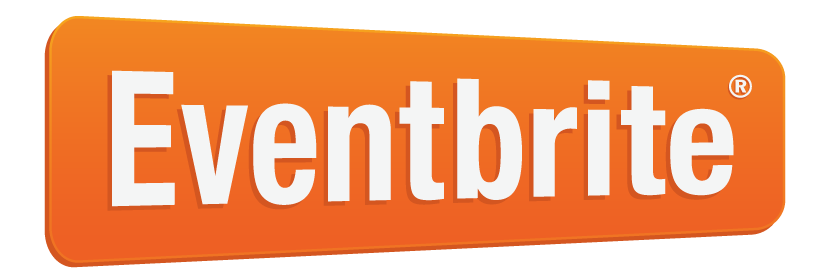

The U.S. Census Bureau is participating in this year’s National Day of Civic Hacking by launching the “City SDK Open Data Solutions Challenge” for developers to use its new City Software Development Kit (SDK). The features in this kit have been directly informed by developer feedback to make building apps using the Census API easier.
Continue building, adding new capabilities to your solution. More CitySDK webinars and hands-on events on the way!
Join the Urban Sustainability Apps Competition featuring Avi Bender, Census CTO. Register here and be sure to check the box: “Using the City SDK”.
The Census CitySDK team is partnering with Small Business Administration for the D.C. CODE-A-THON SMALL BUSINESS EDITION.
Join the Open Data Nation CitySDK team. Open Data Nation helps cities and causes put their open data to good use.